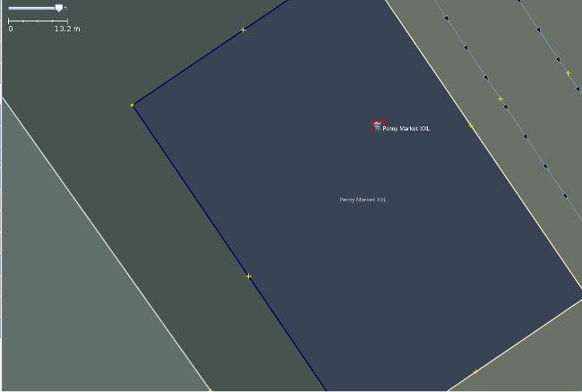
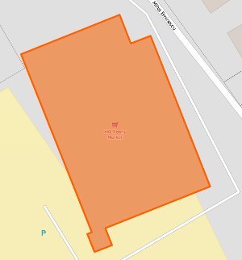
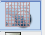
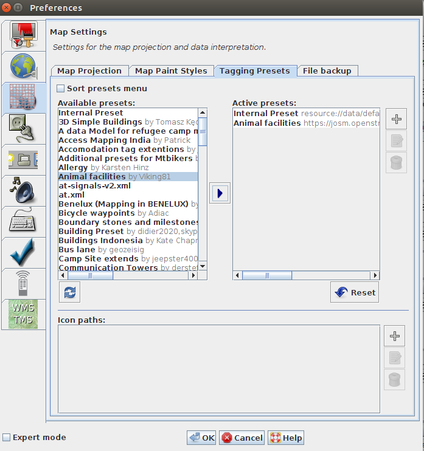

Learning Objectives
- Understand tags
- Understand Keys and Values
- Understand JOSM preset files
About
After you draw/map an object in JOSM you need to add information to this object to describe what it is. You can add attributes to a point, line or shape by attaching tags to it. We are going to use in this tutorial the JOSM Presets menu so we can easily attach the correct tags to an object. The JOSM Presets menu gives you a way to find the object you want to create and fill the information (tags) in a form.
Introduction to Tags and Presets
We have an object drawn in JOSM and now we need to add tags to describe what it is, its name, and many other attributes. For example we have created a supermarket store with the name "My Supermarket Store", we need two tags for it:
- to describe the point as a grocery store
- to hold the name of the grocery store
Tags consists of two parts:
- key = typically defines the type of information you are attaching
- value = defines the specific object
- KEY = VALUE
- name = Penny Market XXL
- shop = supermarket

And, on the OpenStreetMap website the object looks like this:

This works and it is displayed correctly because we have applied the correct tags. But, different mappers from different parts of the world might disagree on how to tag common this. For example, it is important that all schools have the same tag description. If some people tag schools as amenity=school and other people tag it as education=school, there is a problem. So, to make everything consistent and give everyone an agreed standard on how to tag places there is a standard on how to tag places and can be found on the Map Features page on the OSM wiki As you can see there are quite a lot of tags and their respective objects on the wiki page. It is unrealistically to think that we can remember those all the time and going to the wiki page to check how is tagged a specific object might not be always convenient. So, JOSM editor has a Presets menu that makes applying the correct tag much easier. With this menu we can find the option for school, introduce the information in the form and be sure that we have tagged the building correctly. When we add tags using the presets menu the correct tags are added to the object in the Presets Panel.

JOSM Preset options
JOSM comes preloaded with a presets menu that includes the most common types of geographic options. But sometimes those are not enough, and you want to add additional presets. To do that, there are two options:
- create your own presets menu (write it in XML and then load it in JOSM)
- load additional presets file for specific information that you might want to collect (in this situation you only need to load existing presets files, so no XML knowledge is required)
- Open the Preference menu from JOSM, Edit -> Preferences
-
Click on the Map Settings button, is the third button from top and looks like this:

- Click on the third label named Tagging Presets (if it is the first time you do this it might take awhile to load all the existing presets option from OpenStreetMap)
-
Select Animal facilities by Viking81 and click the right arrow to add it to the active presets.

- Click OK and restart JOSM.
- Create a new layer by going to File -> New Layer
- Create a point and select it.
- Go to Presets menu and you should see the presets option that you have just added.
- Click on it and you should see the form that will let you fill up the tags.